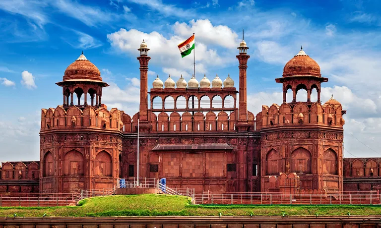
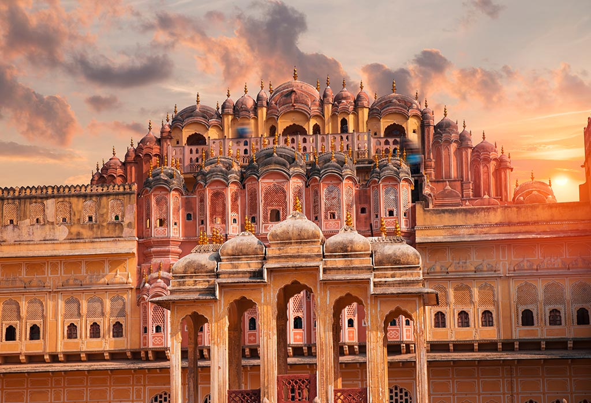
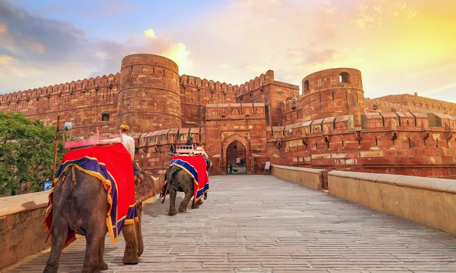
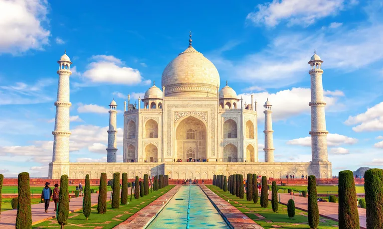
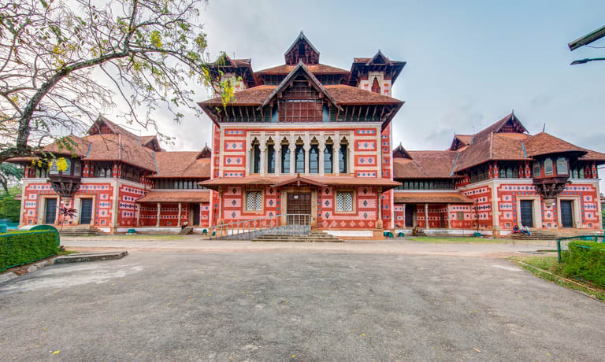

01 Red Fort,Delhi
Entry fee: INR 35 (Indians), INR 500 (Foreigners)
Timings: 09:30 a.m. to 04:30 p.m.
(Closed on Mondays)
02 Hawa Mahal, Jaipur
Entry fee: INR 50 (Indians), INR 200 (Foreigners)
Timings: 09:00 a.m. to 04:30 p.m.
03 Agra Fort, UP
Entry fee: INR 35 (Indians), INR 550 (Foreigners)
Timings: 06:00 a.m. to 06:00 p.m.
04 Taj Mahal, Agra
Entry fee: INR 45 (Indians), INR 1,050 (foreigners)
Timings: 06:00 a.m. to 06:30 p.m. (Closed on Fridays)
05 Humayun's Tomb, Delhi

NR 30 (Indians), INR 500 (Foreigners)
Timings: 06:00 a.m. to 06:00 p.m.
06 Napier Museum,Kerala,
Timings: Everyday 10:00 AM - 4:30 PM